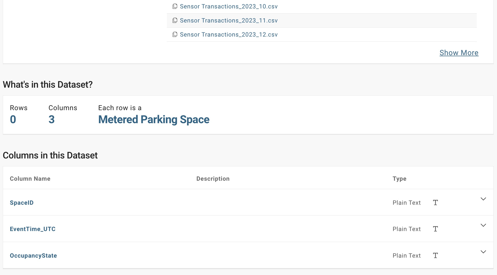
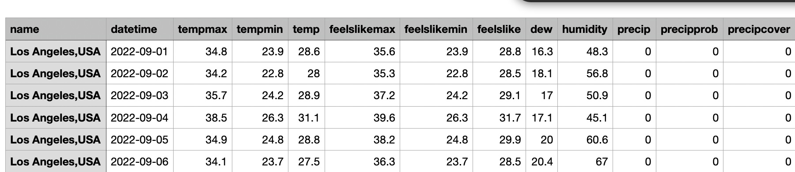

Your Solution To Street Parking in Los Angeles
Feb 11, 2024
Story
Parking in LA is a real problem. If you're around the Korea Town/Silverlake area like me, you've most likely experienced some difficulties with parking. In my case, it's even more challenging as I don't have a designated parking spot in my apartment building so even at night after a long day, I need to look for a street parking spot. It took me just a couple hours in LA to realize that parking was going to cause me a lot of headaches and that I needed to look for a solution.
Solution
So how can I solve this problem and make my life, and maybe others, easier in LA? I decided to build a tool to help me find available spots in real time and use analytics to optimize the routes I take anywhere so I spend less time looking for parking. Turns out that the LA City government have a free API that gives access to the Parking Meter locations and occupancy updated with high frequency in the LA City. So I leveraged that data to find the current occupancy (VACANT or OCCUPIED) of each of the 2807 parking meters that they provide data for.
So how to use the app? Check it out below!
Different Aspects and Decisions About the Project
Data Available
In addition to the live API, LA City also makes available the month to month historical data for all the transactions in the street parking meters. Each CSV file has around 5 million rows of data where each row represents a parking spot becoming ocuppied or available.
I also collected historical weather data for the year 2023. Each row represented the weather in LA per day, some of the features that the dataset includes are shown below
Need of a Model?
The first question that I had was whether or not I needed a predictive model in the first place. When live data is available with such high frequency it is important to be clear about what problem
I am trying to solve and what value it is adding. The question I asked myself was the following: Do I want to know if a street parking spot will be available or taken or do I want to know
ho much longer, an available parking spot will remain available.
If I just wanted to know if the street parking spot was going to be available or not, I did not see the need of a predictive model as you could arrive to your destination and refresh the live data API
to know what street parking spots were available at that precise moment.
If the goal was to reduce the overall time you spend going from your origin to your final destination, including the time searching for parking, then it made sense to have a model that predicted the
amount to time available parking spots in proximity to your destination will remain open, that way you can head directly to the free parking spot and then you can walk to your final destination.
This was the approach I took!
So you may have questions about what my variable of interest was and how I arrive to it. My variable of interest was the delta in minutes between the time a spot became available and became occupied again.
For example: If a parking spot becase available at 5:20 PM and someone parked in the spot again at 5:30, then the time the spot remained available was 10 minutes. This was the information I wanted to predict.
Modeling Decision
Now that I knew what I wanted to predict and I had historical data, the goals was to engineer features that would allow the model to find the hidden patterns in the data enhancing the predictive abilities. I fitted an XGBOOST regressor on 25M rows of data, achieving an R2 of 0.52 on testing data and a RMSQ of 4.8, so off by 4.8 minutes on average. Below you will find a chart displaying the importance of each feature the model was trained on.

Model Deployment
The app is a Streamlit app hosted on Github. I needed a way to use my trained model in this application so others could get the predictions on the parking spots. In order to achieve this,
I serialized the model, serialization is the process of converting the structure of the model into a sequence of bytes that the computer can understand, using pickle. Pickle is a Python library that
allows you to serialize different objects, in this case the structure of the trained ML model.
The whole idea of serializing the model is that we can utilize it with the parameters that have been estimated from the training process. So on the Streamlit app, I could also use pickle to deserialize the model
and convert it back to its original structure, and with this original structure we can make predictions!
Testing Model Efficacy
So all of these look great, but... Does it actually work? Being completely honest, I don't know... and by working I mean, you're actually able to spend less time searching for street parking in DTLA. What I do know is that I'll figure it out. I find it hard to believe that this app will gain enough traffic and feedback from people to be able to understand if people are benefiting from this. However, I have traffic data from the Bing Maps API and I could leverage that to simulate users and understand whether they were able to find a spot or not. I haven't started working on this.
Next Steps
- Test whether it works, and improve it.
- Understand how we can make the user experience more smooth when using the app
Final Notes
- This app will ask you if it can know your location. This is for the "Current Location" features. This app does not collect data.
- You will need to remove some pop ups as the app opens a new tab to display Google Maps, and in order to open Google Maps you need to remove this